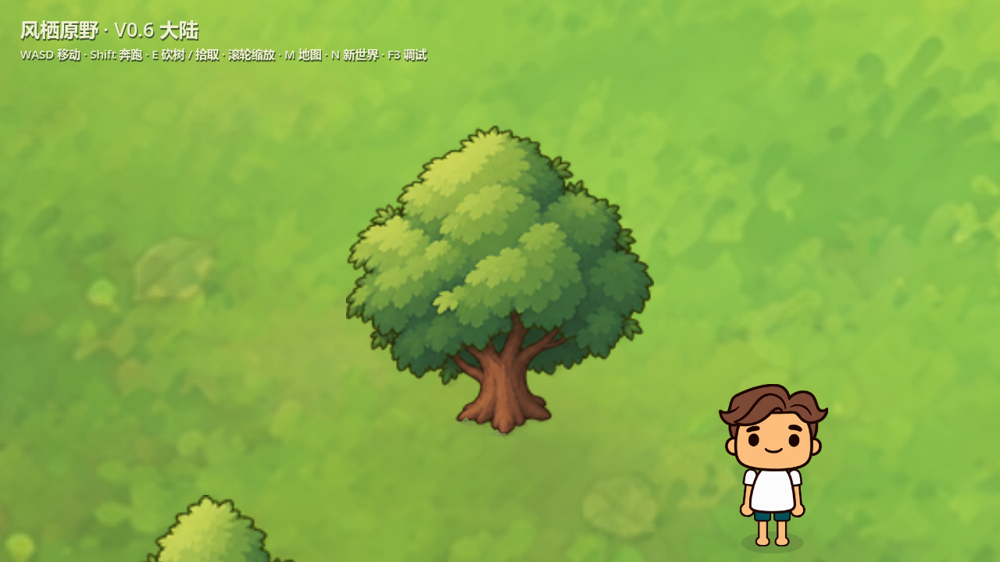
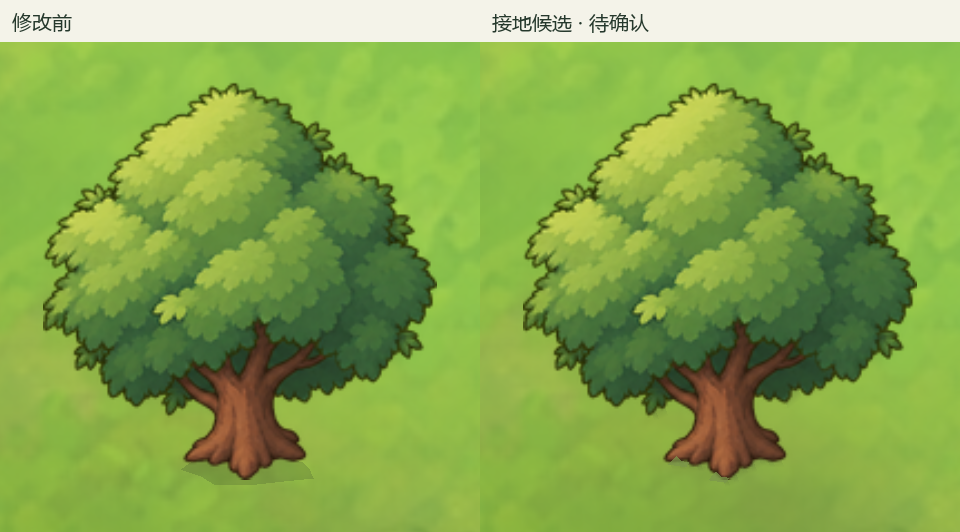
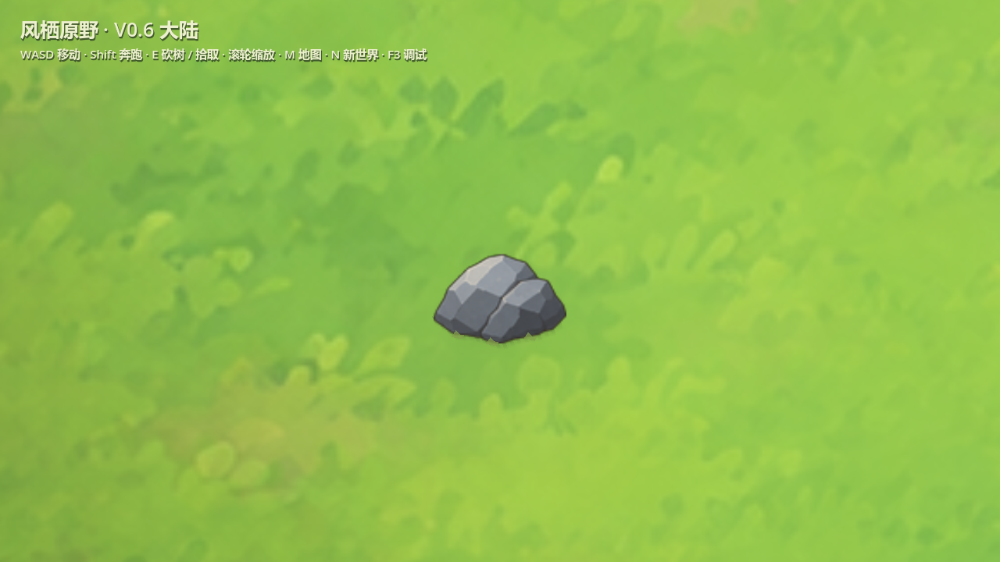
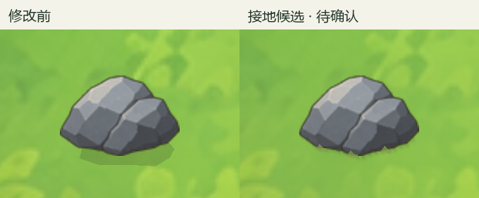
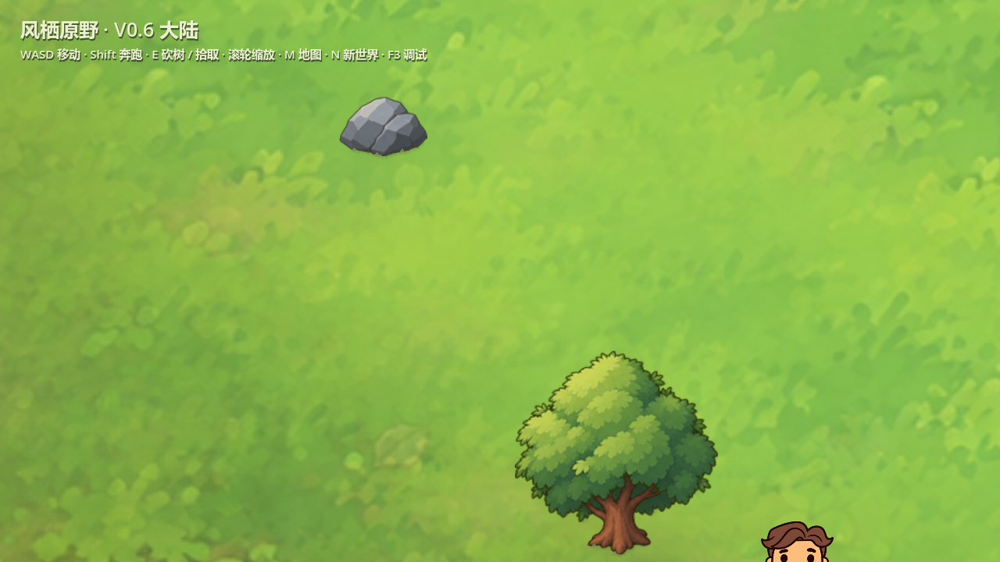
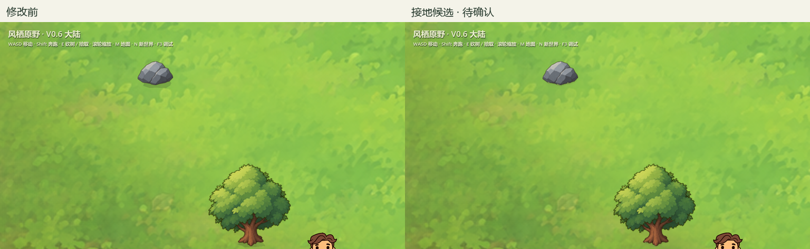
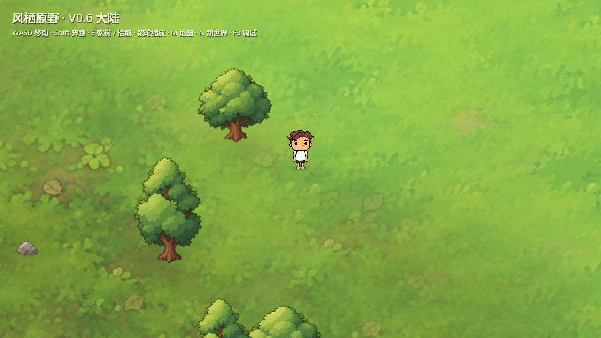
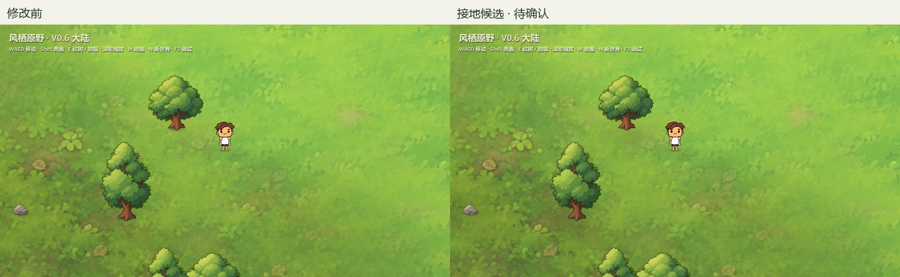

树木与石头接地融合 · 阶段 A 候选
仅处理当前真实 V0.6 场景中的四个对象（两种树、两种石头），未推广正式世界。Seed 447349832。原图、地图分布、角色动作和碰撞保持；全部截图来自 Godot 4.7.2 实际渲染。
主要问题：原单层多边形阴影边缘明显、位置按通用宽度计算，未追随实际树根/石底；缺少局部底缘遮挡；地面高对比纹理与主体争抢。现有岩石具备顶面及前侧厚度，本轮未重画。
候选：按 PNG 实际底缘生成渐隐接触带；树冠低对比短影单独位于地面层；不规则、轻微的环境色过渡和少量局部底缘覆盖；仅对象附近约 100 世界单位内弱化纹理。没有增加花草密度，也没有统一深色圆盘。
树根近景
同 Seed、同位置、同机位。左右拖动分界线；下方可查看并排图。


左：修改前右：候选
并排对比

石头近景
同 Seed、同位置、同机位。左右拖动分界线；下方可查看并排图。


左：修改前右：候选
并排对比

树石混合场景
同 Seed、同位置、同机位。左右拖动分界线；下方可查看并排图。


左：修改前右：候选
并排对比

正常游戏视角 · 1×
同 Seed、同位置、同机位。左右拖动分界线；下方可查看并排图。


左：修改前右：候选
并排对比

验证边界
12 项专项检查，失败 0。原点/碰撞保持，实际区块卸载并用新工作器数据重建后，坐标、接地采样、Seed 参数一致。共享地面采样采用世界坐标，不按区块裁切。尚未完成多 Seed、多生态实景或全世界密度下性能验收；不据此声称阶段 B 通过。
候选存在取舍：底缘覆盖是少量简化程序形状；近景放大仍可看出原 PNG 的显示精度。局部纹理弱化在正常视角较克制，是否足够减少贴图感需用户视觉判断。阶段 A 完成即停止。
专项记录 · 素材来源与哈希